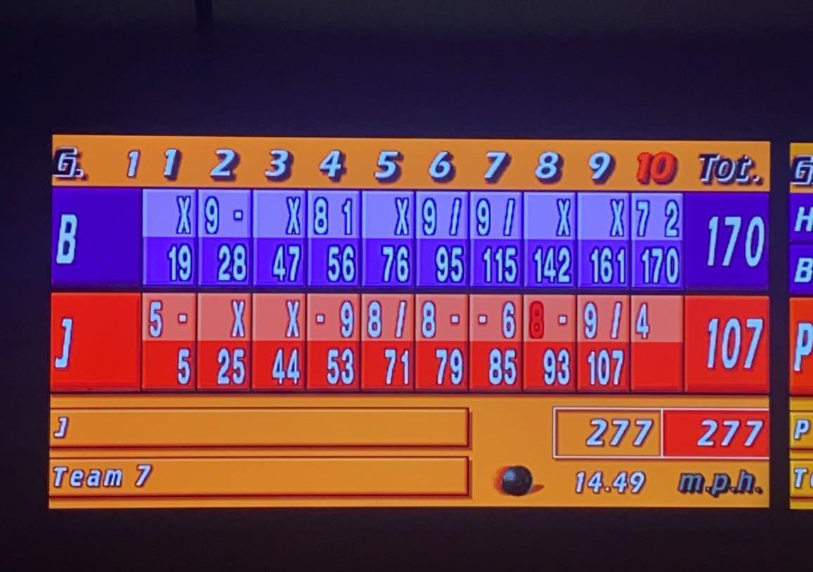

Bowling is a recreational and competitive sport where players roll a heave ball down a wooden
or synthetic land to knock down 10 pins arranged in a triangle. A standard game consists of 10 frames,
with players receiving a maximum of two rolls per frame to clear all the pins.
The goal is to achieve a score as high as possible, with a maximum of 300, by consistently
knocking down pins. The point system rewards accuracy and consistent hits.

The scoring system in bowling. Source: Click to view
Pinfall: Each pin knocked down is worth 1 point.
Strike ("X"): Knocking down all 10 pins on the first roll awards 10 points plus the total pinfall from the next two rolls.
Spare ("/"): Knocking down the remaining pins on the second roll awards 10 points plus the pinfall from the next roll.
The 10th Frame: If a player rolls a strike or spare in the 10th frame, they are awarded extra bonus rolls to finalise their score.
Foul: Players should release the ball and stop before the foul line on their approach. Should they step over the foul line, they will be awarded a zero for their roll.
Split: Occurs when the headpin is knocked down on the first throw, but two or more non-adjacent pins remain standing with a noticeable gap between them, leaving a difficult spare attempt where striking these pins is highly challenging.
Equipment and Setup
The Lane: A standard bowling lane is 60 feet long and made of polished wood or synthetic material.
It is lightly coated with lubricating oil in specific patterns that affect the ball's movement.
The Ball: Typically weighing between 6 and 16 pounds, or 2.7 and 7.3 kg, standard balls feature drilled holes for a secure grip.
The thumb, middle finger, and ring finger are to be placed into these holes when bowling.
They all weight in different pounds (lbs), and they must be 10% of the bowler's weight.
Shoes: Players wear specialized bowling shoes with sliding soles on one foot to control their momentum before release, and a rubber sole on the other for braking.
Types of Bowling Balls & Lanes
Bowling Balls and Lanes are not all the same. They each have different properties and are matched based on the friction and oil patterns.
Bowling Balls range from straight-rolling plastic to high-hooking reactive resin, while lanes are coated with synthetic oil applied in
specific "patterns", affecting and dictating how the ball skids, grips, and hooks into the pins.
Bowling balls are primarily categorized by their outer shell (coverstock) and internal core,
which dictate how much friction they generate on the lane and how sharply they hook.
The four main types range from beginner plastic balls to aggressive reactive resin designs.
Advanced and competitive bowlers playing on various oil patterns.
Features:
Made from advanced resin compounds, these balls absorb lane oil to create aggressive friction, resulting in a dramatic, sharp "hook" into the pocket. They come in three variations.
Solid: Reads the lane earlier for a smooth, even hook.
Pearl: Skids further down the lane before snapping sharply at the pins.
Hybrid: Combines both solid and pearl materials for a versatile mid-lane and backend reaction.
Bowling ball core types include pancake, symmetrical, and asymmetrical desings, which dictate how a ball rolls, hooks, and flares on the lane.
Pancake Cores:
Shape: Flat, circular disk embedded near the top of the ball.
Motion: Minimal flare with a very straight, predictable path.
Use Case: Found mostly in polyester or plastic spare balls.
Symmetrical Cores:
Shape: Evenly balanced weight distribution around the center (like a lightbulb or oval).
Motion: Smooth, predictable, and controllable arcing motion.
Use Case: Best for beginners, league bowlers, and dry-to-medium lane conditions.
Asymmetrical Cores:
Shape: Uneven weight distribution with a distinct mass bias or Preferential Spin Axis (PSA) marker.
Motion: Stronger, sharper, and more angular backend reaction with high flare potential.
Use Case: Best for advanced players, high rev rates, and heavy oil patterns.
Lane Surface Types
Bowling lanes are broadly categorized into wood and synthetic surfaces, which drastically affect ball friction and hook potential.
A standard bowling lane is 60 feet long from the foul line to the headpin and is divided into three main zones. To protect the wood or synthetic surface, lanes are coated with a silicone-based oil.
Overview of the Lane:
The Front End: The first 15–20 feet where the lane machine applies a heavy volume of oil. Balls will skid here.
The Mid-Lane: The middle of the lane where the oil transitions. This is where the ball begins to build rotational force.
The Backend: The final 20 feet leading to the pins, which typically has no applied oil. When a ball exits the oily section and hits this dry friction, it hooks.
Common Lane Patterns:
House Shot: Standard recreation oil pattern. It typically puts heavier oil in the center and dry oil on the edges, acting as a "funnel" to help the ball hook into the pocket.
Sport Shot: Competitive, flat patterns used in tournaments (e.g., PBA patterns). They lack the forgiving "funnel" and demand precise accuracy and ball-reaction adjustments.
A softer, synthetic-like shield placed directly over older wooden lanes to extend their lifespan, resulting in an earlier ball hook
Different Throwing Styles
No player has the exact same style of throwing a bowling ball.
There are many different ways in which to deliver, known as a throw or roll, the bowling ball in order to advance it towards the pins in an accurate and powerful manner.
Bowling styles generally fall into six main categories based on release, ball speed, and rate of revolution:
Strokers (classic, smooth)
Crankers (high revs, power)
Tweeners (versatile balance)
Two-Handers (modern, maximum spin)
Spinners (helicopter spin)
Straight Bowlers (beginner-friendly)
Drag the slider below to view the rate of revolution (RPM) and type of throw.
A conventional bowling form is the most commonly used method in ten-pin bowling. There are many styles that can be used in a conventional bowling form.
However, all of the styles have the same objective in which their method is used to knock down all ten pins and achieve a strike.
Stroker
The frames above represent on how a Stroker releases the ball, and the ball's direction.
Keep an upright posture, standing straight with shoulders squared and aligned directly parallel to the foul line.
Utilise your gravity-driven arm, swinging with little muscle tension, and lift the ball to roughly shoulder height, keeping the backswing roughly parallel to the ground.
Keep the wrist relatively flat or straight with very little cupping or twisting.
Allow your thumb to exit the ball slightly before the fingers.
Apply a small finger rotation (about 1 - 2 inches) from directly behind or slightly side-on to the ball to create gentle, predictable arcing hook.
Description:
These are bowlers who release their bowling ball in a smooth manner. They typically have rev rates less than 300 Revolutions Per Minute (RPM).
Strokers often keep their shoulders square to the foul line and their backswing generally does not go much above parallel to the ground, which reduces the ball's RPM when released,
decreasing its hook potential and hitting power.
A typical approach utilises a traditional, controlled 4-step approach with a steady swing and low revolution rate.
They rely on precision and straight lines with a gentle curve, keeping the ball closer to the outside of the lane.
Key Mechanics:
Smooth Footwork: Using a classic, controlled 4-step approach, the steps should be even-paced, establishing a solid, balanced foundation at the foul line rather than relying on explosive speed.
Gravity-Fed Backswing: Avoid muscling the ball. Keep your arm relaxed, allowing the natural force of gravity to dictate your swing. Your backswing should typically reach no higher than parallel to the ground or about shoulder height
Ensure a Controlled Release. Keep your shoulders square to the foul line. Your thumb and fingers should exit the ball close to the same time. Use a very mild,
subtle rotation (just 1 or 2 inches of finger action) from behind or the side of the ball to produce a modest axis tilt and a smooth, gentle hook.
Maintain a medium ball speed, typically launching between 22-29 km/h. Strokers generally stand to the right (right-handers) and play a "down-and-in" line, targeting near the second of third arrow on the lane,
where the ball should roll straight down on the outside part of the lane before hooking smoothly into the pins.
Recommended Bowling Balls:
As they impart fewer revolutions and less axis rotation than crankers, they mostly use symmetrical core reactive balls with solid or hybrid coverstocks, which grip medium oil without overreacting.
Tweener
The frames above represent on how a Tweener releases the ball, and the ball's direction.
Keep your shoulders relatively square to the foul line and your body relaxed, maintaing a steady 4-step approach, ensuring your timing is crisp and you slide to the line smoothly.
Bring the ball to a moderate height (about shoulder level). Avoid the overly high backswing of a "cranker," but use enough height to generate natural pendulum momentum.
At the bottom of the swing, cup your wrist slightly to store power, allowing your thumb to exit the ball first as the ball clears your sliding ankle, then uncup your fingers while actively rotating them from behind the ball (between the 4 and 6 o'clock positions) to create axis tilt and rotation.
For versatility across different conditions, play the middle part of the lane, usually targeting the area between the second and third arrows.
Description:
Players who play in this style delilve the ball in a manner that falls somewhere in between stroking and cranking, having revolution rates between 300 and 370 rpm.
This modified delivery uses a higher backswing than is normally employed by pure strokers or less powerful wrist position than pure crankers.
In short, Tweener is a "power stroker" that bridges the gap between strokers and crankers, which yields a higher rev rate than strokers but better control than crankers, allowing them to adapt to multiple lane conditions.
Recommended Bowling Balls:
As this style balances power and control, versatile reactive bowling balls with symmetrical or mild asymmetrical cores and pearl or hybrid coverstocks work best.
Cranker
The frames above represent on how a Cranker releases the ball, and the ball's direction.
Start with your hand behind the ball during the forward swing.
As the ball reach the release zone at your ankle, forcefully unhinge your wrist.
Rotate your fingers quickly from inside to outside (about the 7 o'clock to the 4 o'clock position for right-handers) to impart maximum rotation and a sharp, angular hook.
Description:
They are players who strive to generate revolutions using a cupped wrist or excessive wrist action, typically resulting in revolution rates over 400 RPM.
These players who rely on wrist action may have a high backswing and open their shoulders to generate ball speed.
They often cup the wrist, but open the wrist at the top of the swing.
Beginning the downswing, they tilt their wrist upward and let their elbow slightly bend to "cradle" the ball. This keeps the ball locked in their dominant hand and stores energy.
They then employ employ a higher backswing to generate momentum, using a relaxed shoulder to whip the ball forward
Crankers often delay their release slightly, allowing their sliding foot to finish and plant on the lane before the hand comes through the ball, which acts as a whip to generate higher revolutions.
In short, this style emphasizes raw power and a high rev rate.
The bowler utilizes a strong wrist snap and explosive release to make the ball sweep across the lane and hook violently into the pocket, maximizing pin action.
Recommended Bowling Balls:
For this type of throw, it is recommended to use strong reactive resin or asymmetrical core bowling balls, as they are designed to flare and snap aggressively on the backend of the lane to match the high rev rate.
Two-Handed Bowler
The frames above represent on how a Two-Handed Bowler releases the ball, and the ball's direction.
Remove your thumb from the ball, use a fingertip grip with your middle and ring fingers, and rest your non-dominant hand on the front or side of the ball for support and control.
Hold the ball close to your waist at a 90-degree arm angle, keeping your knees slightly bent and shoulders relaxed.
Use a 4 - or 5-step approach, keeping your speed smooth and slow in the first few steps, then explode with power upon approaching the foul line, opening your hips naturally by pulling your dominant-side foot slightly back during your walk-up.
Push the ball forward smoothly as you reach your 2nd step, brining your elbow off your hip to create room for the swing.
As the ball goes into your backswing, ensure your legs and hips get out of the way so that your arm drops the ball into the space close to your body.
Keep your hand underneath and behind the ball as long as possible, releasing the ball near your ankle, letting your non-dominant hand peel away while uncoiling your torso through the shot,
focusing on a forward rolling motion rather than forcing a spin with your upper body.
Description:
This is a modern, highly popular technique where the bowler places both hands on the ball without utilizing the thumb hole. This generates massive amounts of revolutions and power through hip rotation and an uninhibited backswing.
Players who utilise this technique is where their throwing hand is placed in bowling ball and the opposite hand is also placed on the ball during the shot.
Traditionally, players insert two fingers into the ball, leaving the thumb out, with the dominant hand used to cradle the ball and create extra spins on release.
The opposite hand is then used to guide the ball through the throwing motion, with the ball delivered shovel-style.
These bowlers are forced to flex forward farther and rotate their hips more than a single handed bowler, placing more torque through the spin in order to increase the ball's speed and revolution rate.
If done correctly, this increased force, revolutions, and pin carry, with revolutions reaching up to 600 RPM.
Do note that it should NOT be confused with the two-handed delivery, where players remove their supporting hand, effectively delivering the ball with only a single hand, prior to release.
An actually delivery involves the use both hands simultaneously to give force to the ball
Recommended Bowling Balls:
This style of bowling required agressive, asymmetrical cores for angularity and strong solid or hybrid reactive coverstocks to handle the high rev rates.
The most popular types for this type of throw are Reactive Resin (asymmetrical cores) for heavy hook and pin carry, Urethane for control on dry lanes, and Polyester (Plastic) for shooting spares.
Spinner
The frames above represent on how a Spinner releases the ball, and the ball's direction.
Maintain your standard 4 or 5-step approach, keeping your footwork slow and steady, making sure your shoulders stay level.
Do not drop your shoulder, bend your elbow, or cup your wrist during the swing.
Keep your hand behind the ball. As you reach the foul line, ensure your entire hand is directly behind the ball with absolutely no wrist hinge.
Unlike hook bowling, you must release your thumb and fingers at almost the exact same time.
Impart a high-axis tilt as you let go, aiming to rotate the ball with your forearm/wrist so it spins sideways in the air, entering the pins almost like a spinning top.
Description:
This is a style frequently seen in Asian countries like Taiwan and Japan, where the lanes are usually oiled from the foul line to the pin rack.
The bowler imparts an upright, horizontal (helicopter-like) spin on the ball rather than a standard forward-and-side roll
Players who use this style release ball such that it rotates around the vertical axis in a counter clockwise motion as it moves down the lane (when done by a right-hander and is viewed from above).
They usually generate around 90 degrees of axis tilt and virtually no side rotation.
A hook needs friction, in order to allow the ball to have a grip on the lane. This is not the case in spinning, where very little of the ball's surface touches the lane,
which is intended, as they do not require any kind of friction.
In this case, the objective depends on pin deflection. For right-handers, the bowler delivers the ball the lane, usually a left-to-right line.
The ball first strikes the front pin, then move down the front row of pins in the direction opposite to its spin, which is the right side in this case (referred to as "riding the rail").
Recommended Bowling Balls & Recommendations:
As this style depends on deflecting off the pins rather than driving through the pocket, it would be better to use a lighter ball, of about 10-13 lbs, or 4.5 - 5.9 kg.
In addition, avoid fingertip grips, and instead, use a semi-conventional or conventional grip without custom inserts, as everything must exit the ball at the exact same time.
Straight Bowler
The frames above represent on how a Straight Bowler releases the ball, and the ball's direction.
Everyone should know how to perform this throw eventually, as amateurs. However, if not, then this is how to do it.
Stand with your feet shoulder-width apart, with your dominant foot slightly behind the other. Note: For right-handed bowlers, place your right foot on the 15th board (roughlly in the center)
Do not look directly at the pins, focusing on the second arrow (the 10th board) from the right, and aligning your hips and shoulders toward this mark.
Push the ball forward in a straight line on your first step. Avoid pushing it to the right, which can cause the ball to drift.
Allow your arm to swing backward naturally like a pendulum, keeping your elbow in and avoiding bending it.
As your arm comes down past your sliding foot, release the thumb first, followed smoothly by your fingers.
Keep your wrist firm. To prevent hooking, maintain a "handshake" position without twisting or rotating your wrist, with your thumb pointing toward the ceiling (12 o'clock) upon release.
Let your arm swing naturally upward towards your shoulder, keeping your eyes locked on your target the entire time.
Description:
Primarily used by casual or beginner bowlers. The ball is rolled perfectly straight down the lane directly into the headpin, relying solely on accuracy rather than hook potential.
Throwing a straight bowling ball requires a steady wrist, a straight arm swing, and precise footwork.
Bowlers using this style generally lock their wrist straight to prevent the ball from curving, followed by keeping their fingers directly behind the ball and their arm close to their body
Finally, they aim for the target arrows on the lane instead of looking at the pins.
Recommended Bowling Balls:
The primary focus for this style of straight-line trajectory is on the coverstock and core combination.
The most common ball for this throw is Plastic (Polyester) as they create the least friction and go virtually dead-straight, excellent for beginners, for picking up spares, and for dry lane conditions.
Urethane balls are also acceptable, as they offer smoother, slightly more predictable rool and improved pin carry, highly durable and great for casual bowlers who want to learn how to control their shot's direction without massive hook potential.
Trivia, Quiz & Mini-Game
Did you know the following facts about bowling?
Historical Origins & Legal Issues
Bowling has existed as far as the Ancient TImes. This is proved by promitive bowling sets in Egyptian gaves found by Archaeologists dating back to 3200 BC.
Is was once banned by Royalty. An example of this is when it was banned it in the 1300s by King Edward III, who wanted to keep soldiers focused on archery.
Connecticut banned nine-pin bowling in 1841 because of heavy gambling. As such, players added a tenth pin to bypass the law, inventing modern ten-pin bowling that is known today.
The first first indoor lanes were opened in New York City in 1840 in Knickerbocker Alleys.
Anatomy of a Bowling Lane & Gear
A lane measures exactly 60 feet from the foul line to the headpin.
Every standard bowling lane consists of exactly 39 wooden or synthetic boards.
Standard ten-pin bowling pins stand exactly 15 inches tall.
The heaviest legal bowling ball allowed in professional play is 16 pounds, or 7.25 kg.
A single bowling ball is legally allowed to have up to 12 holes.
Before 1906, bowling balls were made of a heavy hardwood called Lignum Vitae.
Quirky Terms & Scoring Anomalies
Three consecutive strikes in a row is called a "turkey".
Stringing together nine consecutive strikes earns the name "Golden Turkey".
A Brooklyn Strike is where the ball hits the opposite side of the pocket but still leads to a strike (e.g., left side for a right-handed bowler).
The rarest score statistically achieved the fewest times in history is 292.
On the contrast, a score of 77 is the most probable score, having the highest number of mathematical frame combinations.
Splits can be convered despite difficulty. However, the 7-10 Split is statistically the most difficult split to convert in the entire game.
Record Breakers & Pop Culture
Mechanical pinsetters didn't exist until AMF introduced the automatic pinspotter in 1936, meaning that human intervention is needed for reseting the pins.
The world’s largest bowling alley is the Inazawa Grand Bowling Centre in Japan, housing 116 lanes.
Stephen Shanabrook bowled for 134 hours and 57 minutes straight, completing 643 games.
In popular culture, the cult-classic film The Big Lebowski features bowling as a central theme for protagonist Jeffrey Lebowski.
Quiz
Not submitted
Mini-Game
How to play:
This version of the bowling game below will be different. There will be ONLY ONE throw per attempt.
The aim as usual is to knock down as many pins as possible. The rules below are as follows:
Each turn, you have to aim the ball as close to the middle as possible to achieve a strike.
Use the oscillating marker as a reference. Do note that the speed of the oscillation is not fixed.
When ready, press the RELEASE button. The ball will roll down the lane towards the pin.
Based on the accuracy, the number of pins will fall. You will be given the score based on the number of pinfall.
A strike when all 10 pins fall; The less accurate, the less the number of pins fall.
If the ball hits the sides of the game area before hitting the pins, it will be counted as a gutter ball, and you will be awarded a zero for that attempt.
A successful strike will increase your streak count, which will allow the score to increase exponentially. Should you miss a strike, the streak count will decrease, but it will still multiply by the number of pinfall; The streak changes by 1 should the player strike or not.
You have 12 attempts per game. After that, you will be shown the final score, followed by the accuracy and score average per frame.
When you have finished a game, or would like to restart the game, press the RESET GAME button
Note: DO NOT resize your web viewport during the ball's movement, or the ball will end up hitting the moving and changing Game Area